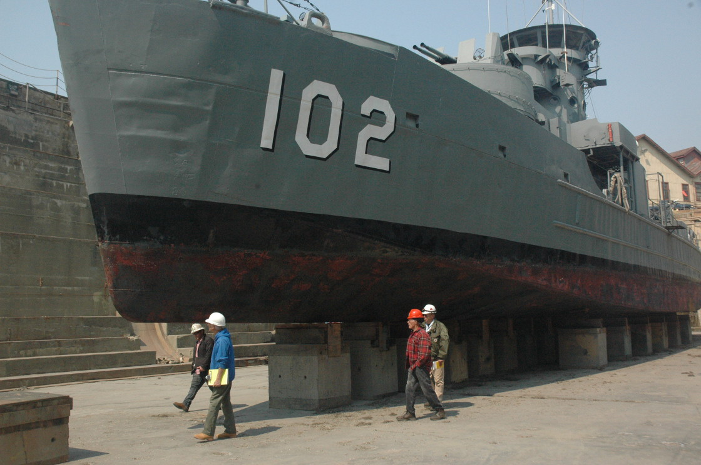

1943 – FEB 19451. Birth of the "Yankee Dollar"
Designed by George Lawley & Sons on an LCI hull, 130 LCS(L) gunboats were built across three yards in Massachusetts and Portland, Oregon. Laid down Jan 13, 1945 at Commercial Iron Works in Portland and commissioned Feb 17, 1945 under Lt. Richard Jones, LCS-102 earned the nickname "Yankee Dollar" ($1.02).